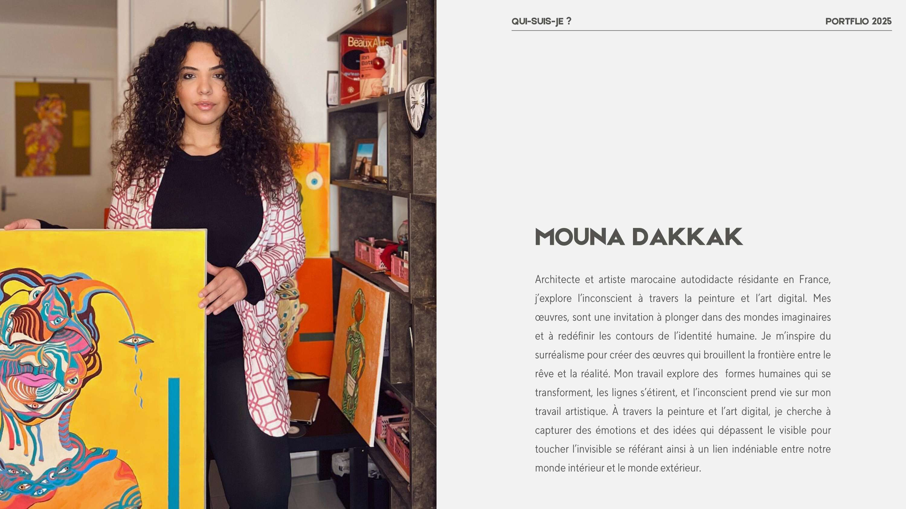
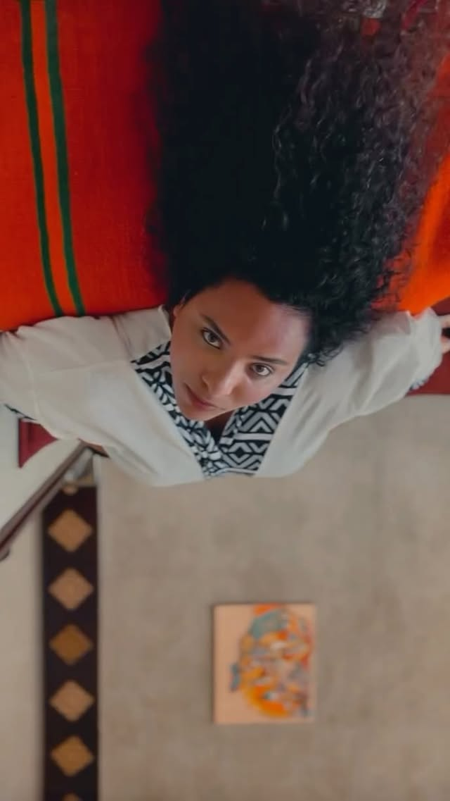

À propos
Architecte marocaine autodidacte, artiste surréaliste.
« Je peins mon subconscient, à la recherche de qui suis-je véritablement. »
Née à Rabat, Mouna Dakkak grandit entre les médinas et les chants de l’Atlas. Architecte de formation, elle passe ses premières années à dessiner des structures — bâtiments, ponts, espaces — avant de comprendre que ce qu’elle cherchait à bâtir était intérieur. La peinture s’impose à elle non comme une reconversion mais comme une évidence longtemps contenue.
Autodidacte, elle développe un langage pictural singulier où le surréalisme rencontre l’introspection. Ses toiles sont peuplées de visages fragmentés, de corps qui se dissolvent et se recomposent, de lignes qui s’étirent comme des rubans de conscience. Chaque œuvre est une plongée dans l’inconscient — le sien, mais aussi celui du spectateur.
Installée à Lyon, elle partage son temps entre la création sur toile, l’art digital, et les vestes peintes à la main sous la marque MoonCraft. L’œil — « ضربة العين » — est sa signature récurrente : non pas un symbole protecteur, mais un regard tourné vers l’intérieur, une quête d’identité qui traverse toute son œuvre.

Œuvre de 2025 — exploration de l’identité fragmentée.
Son travail explore les thèmes intimes et universels qui traversent une vie : l’anxiété, la dépression, la ménopause, la résilience, la santé mentale. Autant de visages de la condition humaine que Mouna traduit en images puissantes, parfois dérangeantes, toujours profondément humaines.
Ce qui distingue sa démarche, c’est l’absence de filtre entre l’émotion brute et la toile. Elle peint comme on écrit un journal intime — sans fard, sans compromis, avec une sincérité qui désarme. Ses œuvres ne cherchent pas à plaire ; elles cherchent à toucher, à résonner, à nommer ce qui souvent reste tu.
À travers la peinture et l’art digital, Mouna Dakkak invite à une exploration de l’inconscient collectif — un voyage où chaque spectateur peut reconnaître un fragment de lui-même.
« Je peins mon subconscient, à la recherche de qui suis-je véritablement. »
منى دكاك
Thèmes
Ce qui traverse l’œuvre
Anxiété
Le vertige intérieur traduit en lignes brisées et en visages fragmentés — quand le pinceau donne forme à ce qui ne se dit pas.
Dépression
Les gouffres de l’âme explorés avec une lucidité sans concession, entre ombre et lumière crue.
Ménopause
La métamorphose du corps féminin — dissolution des formes, renaissance du regard.
Résilience
Reconstruire, toile après toile, une identité plus vaste que les épreuves traversées.
Santé mentale
Un plaidoyer visuel pour que les mondes intérieurs trouvent leur place dans la lumière — sans honte, sans silence.
Identité fragmentée
Qui sommes-nous quand les masques tombent ? Des fragments de soi recomposés dans chaque toile.